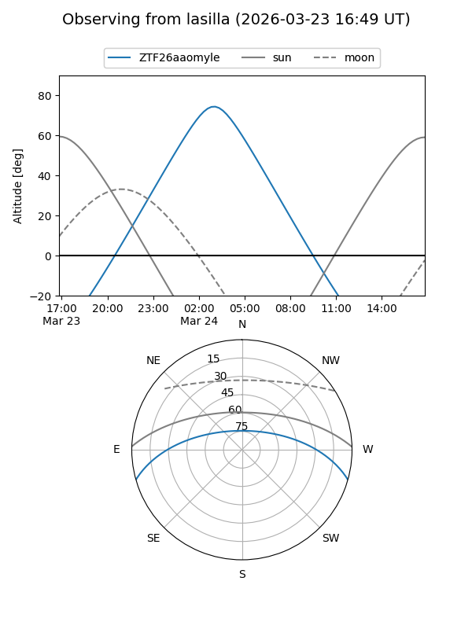
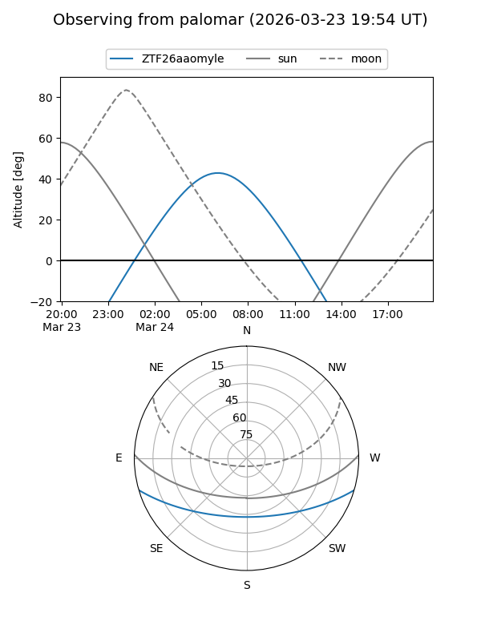

ZTF26aaomyle
Target ZTF26aaomyle at 2026-03-24 09:03
Aliases and brokers:
FINK: link
Lasair: link
ALeRCE: link
alt names
ZTF26aaomyle (ztf,fink_ztf)
Coordinates:
equatorial (ra, dec) = 155.3350,-13.59888
equatorial (HMS+DMS) = 10:21:20.40,-13:35:55.98
galactic (l, b) = (256.3782,+35.36923)
Flags:
Photometry:
last ztfg=18.67
1 ztfg detections
Lightcurve
Visibility


Additional plots